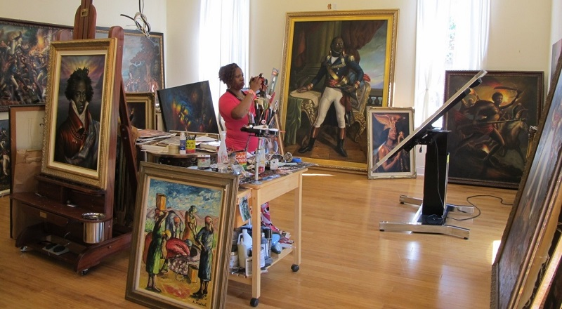

Museum Studies
The SIUE Certificate in Museum Studies provides a structured introduction to a uniquely satisfying profession, presenting an overview of career directions and specializations in a field offering both full-and part-time job opportunities. The curriculum is equally valuable for those already working in museums who wish to broaden or focus their skills; for newcomers interested in exploring a museum career; and for volunteers and board members who want to become more informed and effective.
Courses encourage active learning through exhibition development and internships, along with elective courses that focus on interpretation, administration, education, and the acquisition of disciplinary backgrounds. For most students, this program provides education adequate for immediate entry into museum careers.
This certificate program is interdisciplinary. It draws on the faculty and curriculum in five departments: Anthropology, Art and Design, Historical Studies, Instructional Technologies, and Public Administration and Policy Analysis. Such an interdisciplinary approach allows students to gain the knowledge, skills, and perspectives that will enable them to become effective agents of change within the rapidly evolving museum environment.
SIUE's certificate program utilizes the university's own teaching collection at The University Museum as well as those of other museums in the region. Students are able to create relationships with professionals both from small and large cultural institutions in Illinois and Missouri.
Guest speakers, internship and practicum experience, the student and alumni Museum Studies Association, and volunteer opportunities enrich students' education and open the door to future places of employment in the St. Louis metro area